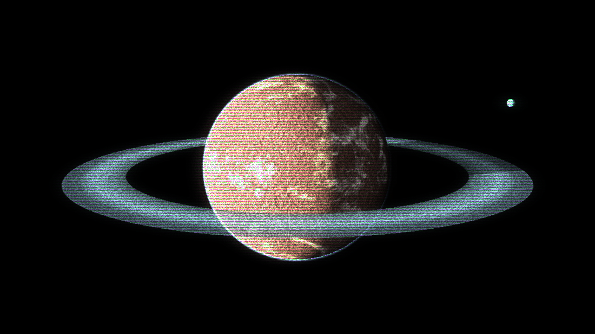

Following the destruction of the Space Pirate presence on Planet Zebes.
GF Comms have been quiet in the Inner Circle Systems.
Pirate Faction activity has been at a minimum.
For once, it seems as though there may be peace in Federation Space.
As the old saying goes, "no rest for the wicked".
>> After-Action Report from Galactic Federation Ranking Officer ████ █████████:
GFS Camelot-Class Cruiser "Avalon" was ambushed by a Pirate Splinter-Group lead by known intergalactic criminal and slaver "Maxon Vlad". The ship scuttled save for it's Command Officer, General ████ █████████, who used the ship as a decoy to lure away Vlad's ships from the Avalon's escape pods. █████████ proceeded to make a blind jump outside the immediate sector, leading him to Outer Reach Planet XX-20; Designate "Asilo". The Avalon, having sustained critical damage, was forced to make an emergency crash landing on the planet's surface, where █████████ was then captured by Vlad's crew. Following this point, █████████'s account of events becomes less concrete; He mentions eventually breaking free from his capture at the hands of Vlad and his men, engaging with said forces only for Vlad to evade capture and flee, with █████████ proceeding to hail distress from the Avalon, which was "beyond recovery".
████ █████████ was then recovered by a nearby scouting patrol, enroute to Federation HQ for Debrief.
>> Entering System NAR-2020 . . .█████████ has, at this time, been returned safely to Federation Space. At the end of his recent private communication, however, he noted that he did not escape Vlad's imprisonment by himself. Initially, he mistook his "rescuer" for career Bounty Hunter "Samus Aran", a mistake made with the fact that his rescuer was donned in a Human-Modified Chozo Power Suit; of which only one(1) has ever been known to existed.
>> Warp Disengaged -- Beginning Sub-Light Approach
█████████ has asked that this apparent Doppelganger of Samus Aran be "looked after" as a personal request from himself. To that end, █████████ has also asked to investigate where the target procured their Power Suit, and if need be, revoke it with considered discretion.
>> Orbital Lock Established . . .
> Surface Composition:
- Silica (67%)
- Carbon (21%)
- Iron (9%)
- Trace various heavy metals . . .
> Local Atmosphere: "Earth-like"
- High Nitrogen Content, with mixes of Oxygen and trace other gasses.
> Weather Condition: Arid
> Water Content: Minimal
> Population Density: Focused
"Samus Aran" was sighted on Planet XX-20.
Witnessed responding to a Space Pirate Threat, and
assisting a Galactic Federation Officer.
This is not possible.
Location of GFS Avalon Confirmed.
Within relative distance to major Planetary Colony.
1. - Locate and investigate the False "Samus Aran".
2. - Ensure target's safety during the course of investigation.
3. - Assess target's character and interpersonal behavior.
Optional - Secure or Recover Chozo Power Suit if necessary.
This page was last modified:
Metroid, Samus and all related likenesses and names are © Nintendo Co. Ltd
All other content are © to their rightful owners. This is a non-profit, fan-based project.
Please support Nintendo, and any Official Metroid Series releases.
For any inquiries regarding this project or others like it,
consult the FAQ, or reach me at the associated Business Email Address:
Send Email